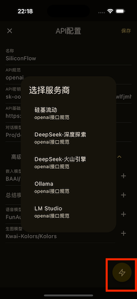

零基础上手 OMate——你的口袋 AI 角色互动酒吧
OMate 是一款能让你与 AI 角色自由互动的移动端应用，从下载安装到跑通第一场对话，跟着这篇一步步来，五分钟就能把它用起来。
这篇能带你从完全不懂到把 OMate 用起来，不需要任何 AI 工具或角色扮演的基础——就像装一个普通 App 那样简单。

它到底是干嘛的——一个生活化类比
想象你走进了一家酒吧。吧台上坐着各种有意思的人：有赛博朋克城市的治安员、有古代江湖的侠客、有科幻飞船的船长……你挑一个想聊的对象坐下，点一杯酒（就是你选的 AI API），然后就可以开始跟他或她聊天了。
OMate 就是这样一家口袋里的 AI 酒吧——omate官网 上就能下载。你下载的角色卡 = 酒吧里的客人，你配置的 API = 你点的酒（决定了 AI 回应的质量和风格），而世界书（World Book） = 这家酒吧的背景设定（比如这是一家 2077 年开在霓虹灯下的地下酒吧）。
别被这些名词吓到——世界书就是一堆关键词触发的背景信息，AI 聊到某个话题时自动展开，让对话更有代入感。
五分钟上手——从下载到第一次跑通
好，废话不多说，拿出手机跟着走。
第一步：装上应用
去下载页面拿安装包，装好打开。第一次启动会看到发现页——一堆现成的角色卡在那儿等着你。
第二步：配好你的 API key
这是最关键的一步，没有 key 就像进了酒吧但没带钱，只能看着。
打开设置 → API 配置，你会看到一个"添加 API"按钮。点进去，先选一个 AI 服务商——SiliconFlow 对新手比较友好，有免费额度。然后去它的官网注册账号，拿到一串以 sk- 开头的密钥，复制粘贴进 OMate 里，保存。

第三步：导入或选一个角色
回到发现页，挑一个你喜欢的角色卡，点进去看详情，然后导入到你的角色列表。如果你之前在 SillyTavern（就是大家说的"酒馆"）里玩过，那更好——OMate 可以直接把酒馆里的角色卡、世界书、预设全部整包导进来，不用重新折腾。
第四步：开始第一场对话
打开角色列表，点你刚导入的那个角色卡，系统会自动创建一条新对话。输入框里打个招呼——比如"你好"——点发送。
等几秒钟，AI 就会回你了。恭喜，你已经跑通了第一场 AI 互动。
上手后先玩这三个功能
第一次跑通之后，别急着换角色。先把这三个功能玩透，你会发现 OMate 的乐趣一下子就打开了。
功能一：面具——换个身份去聊天
面具（Persona）就是你在对话里的"人设"。默认情况下你就是"用户"，但你可以创建多个面具——比如一个是"赛博朋克记者"，一个是"古代侠客的徒弟"。
你会看到什么：对话设置里点"面具"，新建一个，写好你的名字、性格、说话风格。然后回到对话里，AI 的回应会自动把你当成这个面具描述的人来对待。
这意味着什么：面具让你不用每开一个新角色就重新介绍自己一次。同一个面具可以用在不同角色的对话里，保持你的"人设连贯性"。
功能二：世界书——让对话有了背景音
刚才说过，世界书就是一堆"触发式背景"。比如你建一条世界书条目，关键词写"爆炸"，内容写"三天前城里发生了一起神秘爆炸，至今无人认领"。那只要你的对话里提到了"爆炸"这两个字，AI 就会自动把这条背景塞进上下文里，回应就不再是干巴巴的了。
你会看到什么：角色卡详情里一般会自带世界书，或者你可以从酒馆导入。打开对话设置 → Prompt，就能看到当前对话挂载了哪些世界书，可以随时临时关闭某一本试试效果差多少。
这意味着什么：世界书是让 AI 角色"活"起来的关键。没有世界书的对话就像在一张白纸上聊天，加了世界书就像给背景加了 BGM 和灯光。想把它的位置插入、递归激活等进阶机制玩透，可以去omate文档深入看看。
功能三：故事模式——让多个角色同台演戏
单个角色聊熟了，试试故事模式吧。故事模式可以让多个角色在一个故事里互动，你可以阅读、续写、重写每一个章节。
你会看到什么：故事列表点加号 → 导入故事，或者直接扫码导入别人分享的故事书。进入阅读界面后，每一段都是 AI 生成的故事内容，你点"继续阅读"让 AI 写下一段，也可以自己改。
这意味着什么：故事模式是 OMate 从"聊天工具"变成"互动小说平台"的分水岭。你不再只是和一个 AI 对话，而是在看一出由 AI 自动续写的连续剧，还能随时插手改剧情。
小白的三个常见疑问
Q：我之前在酒馆（SillyTavern）里花了很多心血，换 OMate 会不会白折腾？
完全不会。OMate 对酒馆生态做了转化式兼容——角色卡、世界书、预设、聊天记录、宏，全部可以一键导入，导入后还给你一份转化报告告诉你哪些字段完美转过来了、哪些做了降级处理。导出回去也支持，不用担心被锁死。
Q：AI 回复质量不好，有时候答非所问怎么办？
先别急着换角色，去检查一下你的 API 配置——不同服务商的模型能力差异很大。SiliconFlow 的免费额度适合试水，但想要更好的质量可以试试其他模型。另外，角色卡本身的"指令"字段也很重要，写得越清楚、细节越丰富，AI 的回应就越靠谱。
Q：手机内存不够用怎么办？角色卡和对话会不会占很多空间？
角色卡本身很小（一般就是一张 PNG 加几十行文字），对话记录也都是纯文本。真正占空间的是角色卡内嵌的图片素材和你导入的故事书。定期清理不玩的对话和没兴趣的角色卡就行，不用有压力。
接下来怎么走
好，到此为止你已经能用 OMate 愉快地聊天了。如果想深入，推荐先把世界书的"位置插入"机制搞明白——它能让你的背景设定出现在最合适的地方（角色设定前、角色设定后、或者插到聊天记录中间某个深度），配合递归激活，能让 AI 的回应层层递进、越来越有代入感。
总之，OMate 不是一个"AI 聊天机器人"那么简单——它是一个完整的角色扮演生态，而且对新手足够友好。装好、配好 API、导入一个角色，从这三步开始就够了。这套资料也在 GitHub、Gitee、GitCode 三个开源仓库同步了一份，随时可以查看。